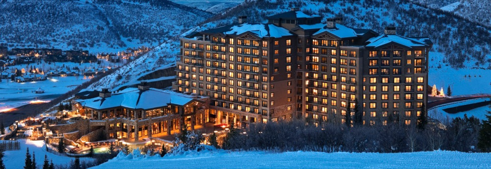
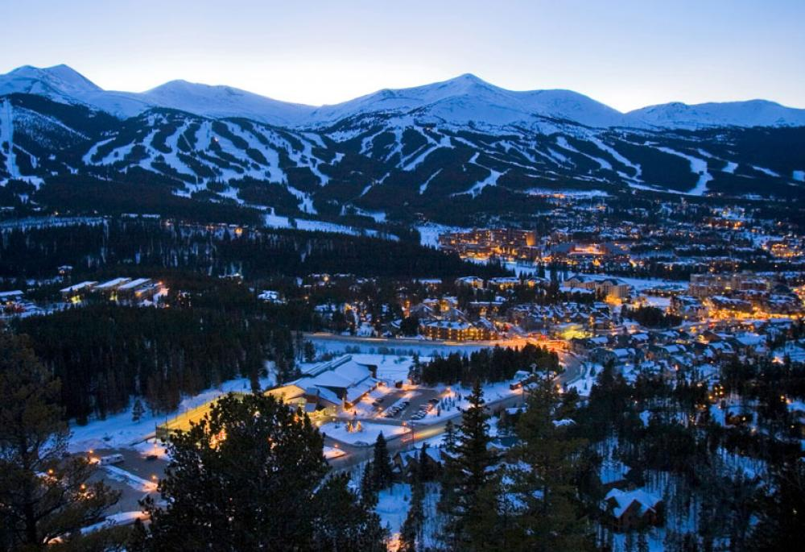
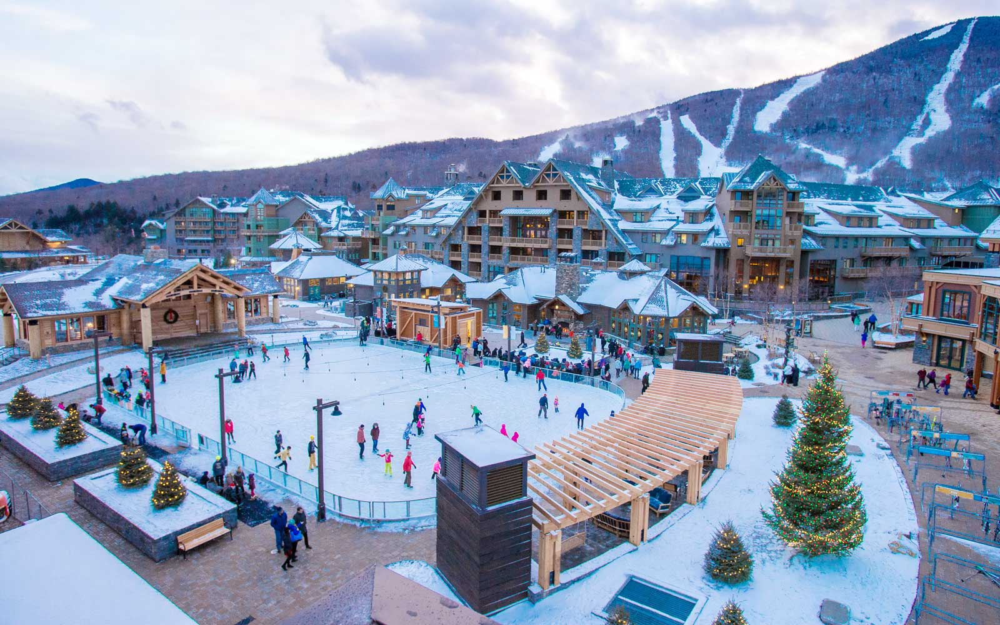

ResortMe
Search for Ski Resorts that best fit you!
Aspen Snowmass
Snowmass Village, CO

Altitidue and Description
Altitude: 3418 km
Snowmass is a part of the Aspen/Snowmass ski resort complex located in the town of Snowmass Village near Aspen, Colorado. The ski area is owned and operated by the Aspen Skiing Company.
It was opened on December 17, 1967 .
Snowmass is the largest of the four Aspen/Snowmass mountains, comprising 3,128 acres (1,266 ha).
The mountain is most notable for its wide cruiser runs, family-friendly atmosphere, and extensive ski-in/ski-out lodging.
Despite its family reputation, the resort also contains several terrain parks, extensive extreme skiing terrain, mogul runs, and gladed terrain.
Snowmass has undergone massive changes in the past few years, including a new gondola along with a new Base Village.
Snowmass has also constructed a new restaurant near Elk Camp, replacing Cafe Suzanne with a large, brand new restaurant.
Today, Snowmass continues its extensive improvements to on-mountain infrastructure as well as lift repairs.
Snowmass has the most vertical feet of skiing of any ski area in the United States, but only when the Cirque poma is running.[2] There are 17 lifts at Snowmass: 8 high-speed quads (Two Creeks, Elk Camp, Alpine Springs, Sheer Bliss, Big Burn, Coney Glade, Sam's Knob, High Alpine), 1 high-speed six pack (Village Express), 2 gondolas (the Sky Cab - better known as the "Skittles" and Elk Camp Gondola), 2 quads (Meadows and Assay Hill), 1 double (Campground) and 2 pull lifts (Scooper and The Cirque).
Lift Ticket Pricing
Adult Price: $169
Youth Price: $112
Slope Quality
(scale of 1-5)
Variety of Slopes: 4.0
Quality of Lifts: 4.0
Deer Valley
Park City, UT
Altitidue and Description
Altitude: 2917 km
Deer Valley is an alpine ski resort in the Wasatch Range, located 36 miles (58 km) east of Salt Lake City, in Park City, Utah, United States.
The resort, known for its upscale amenities, is consistently ranked among the top ski resorts in North America.
Deer Valley was a venue site during 2002 Winter Olympics, hosting the freestyle moguls, aerial, and alpine slalom events. It also regularly hosts competitions for the International Ski Federation.
With a number of other large ski resorts nearby, Deer Valley competes by catering to a more upscale audience than its neighbors, offering amenities such as free ski valets, free parking shuttles, fine dining and boutique shopping in the main lodge.
Stein Eriksen, namesake of the Stein Eriksen Lodge, was host of the mid-mountain lodging property and director of skiing at the resort until his death in 2015.
Lift Ticket Pricing
Adult Price: $135
Youth Price: $84
Slope Quality
(scale of 1-5)
Variety of Slopes: 4.4
Quality of Lifts: 4.0
Breckenridge
Breckenridge, CO
Altitidue and Description
Altitude: 3914 km
Since ski trails were first cut in 1961, Breckenridge Ski Resort has made the town a popular destination for skiers.
Summer in Breckenridge attracts outdoor enthusiasts with hiking trails, wildflowers, fly-fishing in the Blue River, mountain biking, nearby Lake Dillon for boating, white water rafting, alpine slides, and many shops and restaurants up and down Main Street.
Breckenridge Ski Resort is an alpine ski resort in the western United States,
in Breckenridge, Colorado. Just west of the Continental Divide in Summit County, it is perennially one of the most visited ski resorts in the western hemisphere.
Breckenridge is owned and operated by Vail Resorts, Inc., which also operates other ski resorts.
Lift Ticket Pricing
Adult Price: $164
Youth Price: $107
Slope Quality
(scale of 1-5)
Variety of Slopes: 5.0
Quality of Lifts: 4.0
Alta Ski Resort
Alta, UT

Altitidue and Description
Altitude: 3215 km
Alta is a ski area in the western United States, located in the town of Alta in
the Wasatch Mountains of Utah, in Salt Lake County. With a skiable area of
2,200 acres (8.9 km2),
Alta's base elevation is 8,530 ft (2,600 m) and rises to 10,550 ft (3,216 m)
for a vertical gain of 2,020 ft (616 m). One of the oldest ski resorts in the
country,
it opened its first lift in early 1939. Alta is known for being very high
altitude and receives more snow than most Utah resorts,
its average annual snowfall is 514 inches (13.1 m). Alta is one of three
remaining ski resorts in the U.S. that prohibits snowboarders, along with
nearby competitor Deer Valley and Vermont's Mad River Glen.
Lift Ticket Pricing
Adult Price: $104
Youth Price: $54
Slope Quality
(scale of 1-5)
Variety of Slopes: 4.7
Quality of Lifts: 3.7
Vail Ski Resort
Vail, CO
Altitidue and Description
Altitude: 3433 km
Vail Ski Resort is a ski resort located near the town of Vail in Eagle County, Colorado. At 5,289 acres (21.40 km2), it is the third largest single mountain ski resort in the United States, behind Big Sky and Park City,
featuring seven bowls and intermediate gladed terrain in Blue Sky Basin.
Vail opened 56 years ago in 1962 and is currently owned and operated by Vail Resorts, which also operates three other ski resorts in the state (Breckenridge, Keystone, and Beaver Creek), Heavenly, Kirkwood, Northstar at Tahoe, and Park City in Utah.
Vail Mountain has three sections: The Front-Side, Blue Sky Basin, and the Back Bowls. It also has the fourth-largest skiable terrain in North America after Whistler Blackcomb, Powder Mountain, and Big Sky. Most of the resort is wide open terrain with all types of trails. There are cruising runs on most front side and Blue Sky Basin lifts, as well as the wide open Back Bowls, glades, and chutes. Vail Village is modeled on Bavarian village styles, with pedestrian streets.
Unlike other Colorado ski towns such as Aspen, Breckenridge, or Steamboat Springs, which existed as 19th century mining towns prior to the establishment of their ski resorts, the Vail village was built when the resort opened.
Lift Ticket Pricing
Adult Price: $169
Youth Price: $117
Slope Quality
(scale of 1-5)
Variety of Slopes: 5.0
Quality of Lifts: 4.0